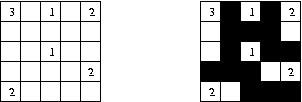

The puzzle Nurikabe is played on a grid. Initially, each grid space is either blank or contains a single number. The goal is to shade in some of the blank spaces to satisfy the following constraints:
The image shows an example of a Nurikabe puzzle and its solution. Take care to verify all four constraints are satisfied in the solution. To help you understand the third constraint, note that the middle cell containing the number 1 can reach the edge of the grid since it shares a corner with a group of unshaded spaces containing the number 2.

It is known that the problem of determining if a Nurikabe grid can be shaded to satisfy the constraints is NP-complete. Your task is much easier. Given an initial grid and a proposed shading, determine if the shading satisfies the constraints of the Nurikabe puzzle.
Input begins with a single integer t that indicates the number of grids to verify. The first line of each case contains three integers r,c,d where the grid has r rows and c columns (1 ≤ r,c ≤ 100). Then, d lines follow, each containing three integers r',c',n meaning the grid cell at location (r',c') contains the positive number n. The upper-left grid space has coordinates (0,0), no space receives more than one number, and no two numbered grid spaces will share an edge. Finally, the shading data is specified by r strings of c characters each (one string per line). The j'th character in the i'th row of the shading data is '#' if the cell with coordinates (i,j) is shaded and '.' if that cell is not shaded. Each test case is preceded by a blank line.
For each input case, output a line containing either solved
or not solved to indicate whether or not
the shading represents a solution to the puzzle.
5 5 5 6 0 0 3 0 2 1 0 4 2 2 2 1 3 4 2 4 0 2 .#.#. .###. .#.## ###.. ..### 5 5 6 0 0 3 0 2 1 0 4 2 2 2 1 3 4 3 4 0 2 .#.#. .###. .#.## ####. ..#.. 2 3 1 0 0 2 .## .## 2 2 1 0 0 1 .. ## 2 2 2 0 0 1 1 1 1 .# #.
solved not solved not solved not solved not solved